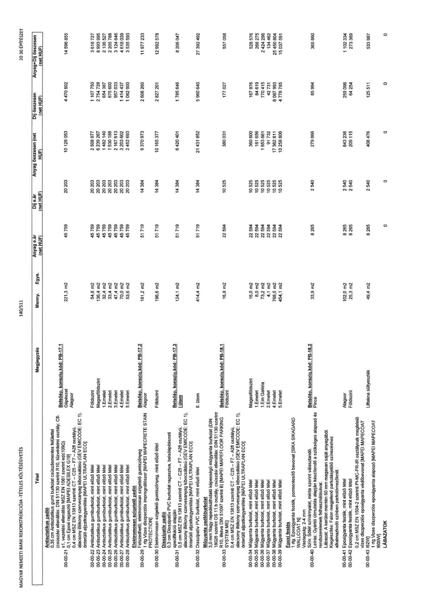

| Tétel | Megjegyzés | Menny. | Egys. | Anyag e.ár (net HUF) | Díj e.ár (net HUF) | Anyag összesen (net HUF) | Díj összesen (net HUF) | Anyag+Díj összesen (net HUF) |
|---|---|---|---|---|---|---|---|---|
| Antisztatikus padló | NaN | NaN | NaN | 0 | 0 | 0 | 0 | 0 |
| 00-00-21 Antisztatikus gumi burkolat csúszásmentes felülettel (csúszási ellenállás: DIN 51130 szerint R10, tűzvédelmi osztály: Cfl-s1, vezetési ellenállás MSZ EN 1081 szerint ed≤109Ω) 0,1 cm Epoxi ragasztó [MAPEI ADESILEX G19] 0,4 cm MSZ EN 13813 szerinti CT - C25 - F7 - A2fl osztályú, alacsony illékony szervesanyag kibocsátású (GEV EMICODE: EC 1), önterülő aljzatkiegyenlítés [MAPEI ULTRAPLAN ECO] | Belsőép. konszig. kód: PB-17.1 Gépészet Alagsor | 221,3 | m2 | 45 759 | 20 203 | 10 126 053 | 4 470 802 | 14 596 855 |
| 00-00-22 Antisztatikus gumiburkolat, mint előző tétel | Földszint | 54,8 | m2 | 45 759 | 20 203 | 2 508 977 | 1 107 750 | 3 616 727 |
| 00-00-23 Antisztatikus gumiburkolat, mint előző tétel | Magasföldszint | 136,4 | m2 | 45 759 | 20 203 | 6 239 267 | 2 754 728 | 8 993 995 |
| 00-00-24 Antisztatikus gumiburkolat, mint előző tétel | 1.Emelet | 32,4 | m2 | 45 759 | 20 203 | 1 482 140 | 654 387 | 2 136 527 |
| 00-00-25 Antisztatikus gumiburkolat, mint előző tétel | 2.emelet | 33,4 | m2 | 45 759 | 20 203 | 1 530 188 | 675 600 | 2 205 788 |
| 00-00-26 Antisztatikus gumiburkolat, mint előző tétel | 3.Emelet | 47,4 | m2 | 45 759 | 20 203 | 2 167 613 | 957 033 | 3 124 646 |
| 00-00-27 Antisztatikus gumiburkolat, mint előző tétel | 4.Emelet | 70,0 | m2 | 45 759 | 20 203 | 3 203 602 | 1 414 437 | 4 618 039 |
| 00-00-28 Antisztatikus gumiburkolat, mint előző tétel | 5.Emelet | 53,6 | m2 | 45 759 | 20 203 | 2 452 693 | 1 082 900 | 3 535 593 |
| Elektromosan szigetelő padló | NaN | NaN | NaN | 0 | 0 | 0 | 0 | 0 |
| 00-00-29 Felszedhető, elektromosan szigetelő gumiszőnyeg 1 rtg Vizes diszperziós impregnálószer [MAPEI MAPECRETE STAIN PROTECTION] | Belsőép. konszig. kód: PB-17.2 Alagsor | 181,2 | m2 | 51 719 | 14 384 | 9 370 973 | 2 606 260 | 11 977 233 |
| 00-00-30 Elektromosan szigetelő gumiszőnyeg, mint előző tétel | Földszint | 196,6 | m2 | 51 719 | 14 384 | 10 165 377 | 2 827 201 | 12 992 578 |
| Disszipatív padló | NaN | NaN | NaN | 0 | 0 | 0 | 0 | 0 |
| 00-00-31 0,3 cm Disszipatív PVC burkolat ragasztva, belsőépítészeti specifikáció alapján 0,5 cm MSZ EN 13813 szerinti CT - C25 - F7 - A2fl osztályú, alacsony illékony szervesanyag kibocsátású (GEV EMICODE: EC 1), önterülő aljzatkiegyenlítés [MAPEI ULTRAPLAN ECO] | Belsőép. konszig. kód: PB-17.3 I. ütem | 124,1 | m2 | 51 719 | 14 384 | 6 420 401 | 1 785 646 | 8 206 047 |
| 00-00-32 Disszipatív PVC burkolat, mint előző tétel | II. ütem | 414,4 | m2 | 51 719 | 14 384 | 21 431 852 | 5 960 640 | 27 392 492 |
| Műgyanta padlóburkolat | NaN | NaN | NaN | 0 | 0 | 0 | 0 | 0 |
| 00-00-33 3,0 mm Nagy repedésáthidaló képességű műgyanta burkolat (DIN 18026 szerint OS 11.b osztály, csúszási ellenállás: DIN 51130 szerint R10, illetve DIN 51097 szerint B) [MAPEI MAPEFLOOR PARKING SYSTEM ME] 0,4 cm MSZ EN 13813 szerinti CT - C25 - F7 - A2fl osztályú, alacsony illékony szervesanyag kibocsátású (GEV EMICODE: EC 1), önterülő aljzatkiegyenlítés [MAPEI ULTRAPLAN ECO] | Belsőép. konszig. kód: PB-18.1 Földszint | 16,8 | m2 | 22 594 | 10 525 | 380 031 | 177 027 | 557 058 |
| 00-00-34 Műgyanta burkolat, mint előző tétel | Magasföldszint | 16,0 | m2 | 22 594 | 10 525 | 360 600 | 167 976 | 528 576 |
| 00-00-35 Műgyanta burkolat, mint előző tétel | 1.Emelet | 8,0 | m2 | 22 594 | 10 525 | 181 656 | 84 619 | 266 275 |
| 00-00-36 Műgyanta burkolat, mint előző tétel | 1.Em Galéria | 73,2 | m2 | 22 594 | 10 525 | 1 653 881 | 770 415 | 2 424 296 |
| 00-00-37 Műgyanta burkolat, mint előző tétel | 2.emelet | 4,1 | m2 | 22 594 | 10 525 | 91 732 | 42 731 | 134 462 |
| 00-00-38 Műgyanta burkolat, mint előző tétel | 4.Emelet | 768,5 | m2 | 22 594 | 10 525 | 17 362 811 | 8 087 993 | 25 450 804 |
| 00-00-39 Műgyanta burkolat, mint előző tétel | 5.Emelet | 454,1 | m2 | 22 594 | 10 525 | 10 258 806 | 4 778 785 | 15 037 591 |
| Epoxi festés | NaN | NaN | NaN | 0 | 0 | 0 | 0 | 0 |
| 00-00-40 1 rtg. Epoxigyanta festék, pormentesítő bevonat [SIKA SIKAGARD WALLCOAT N] Vastagság: 2-4 mm Szín: Sötét szürke árnyalattal, minta szerint választandó. Leírás: Gyártói útmutatás alapján készítendő a szükséges alapozó és rendszerelemek felhasználásával. Lábazat: A kerület mentén 60 mm magasan saját anyagából. Kiegészítés: Falon megjelenő parkolásjelölő színezéséhez alkalmazandó színben parkolómezőknél. | Belsőép. konszig. kód: PB-18.2 Pince | 33,9 | m2 | 8 265 | 2 540 | 279 866 | 85 994 | 365 860 |
| 00-00-41 Epoxigyanta festék, mint előző tétel | Alagsor | 102,0 | m2 | 8 265 | 2 540 | 843 236 | 259 098 | 1 102 334 |
| 00-00-42 Epoxigyanta festék, mint előző tétel | Földszint | 25,3 | m2 | 8 265 | 2 540 | 209 115 | 64 254 | 273 369 |
| 00-00-43 0,2 cm MSZ EN 1504-2 szerinti PI-MC-PR-IR osztálynak megfelelő vizes diszperziós epoxigyanta védőbevonat [MAPEI MAPECOAT I600W] 1 rtg Vizes diszperziós epoxigyanta alapozó [MAPEI MAPECOAT I600W] | Liftakna süllyeszték | 49,4 | m2 | 8 265 | 2 540 | 408 476 | 125 511 | 533 987 |
| LÁBAZATOK | NaN | NaN | NaN | 0 | 0 | 0 | 0 | 0 |
